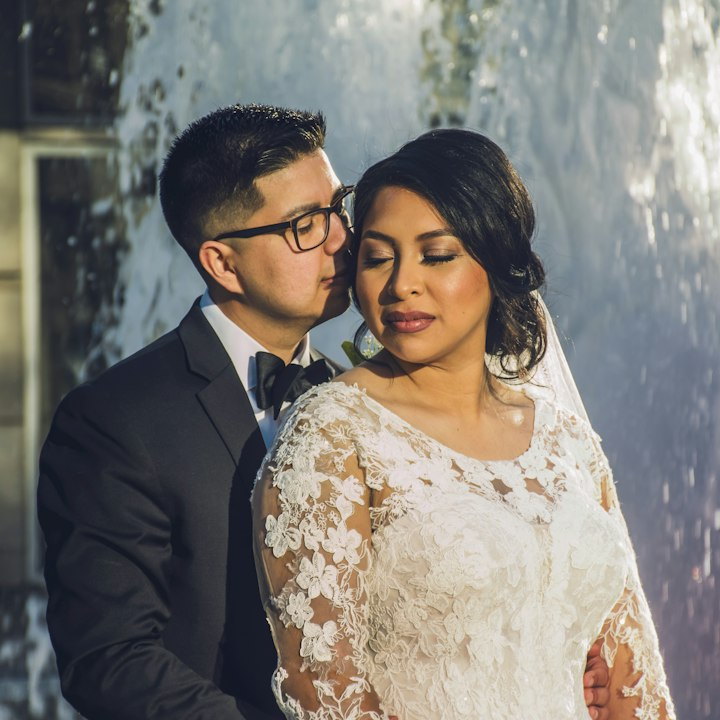
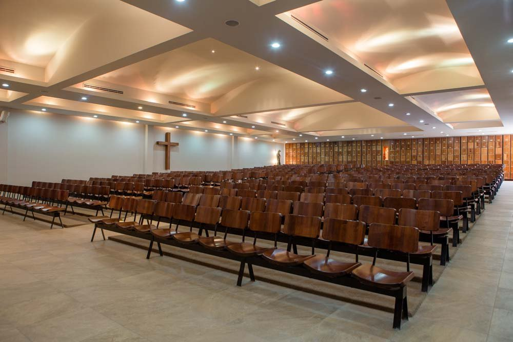
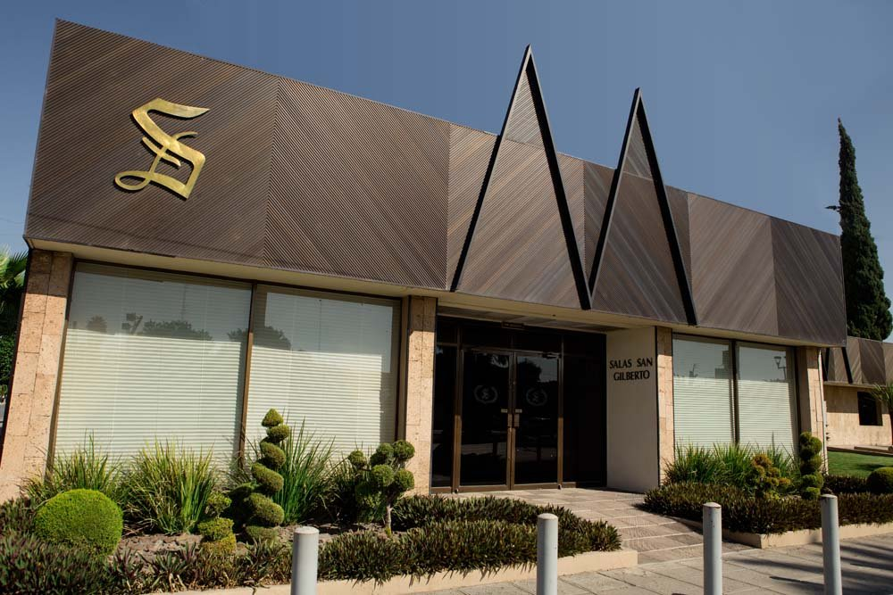
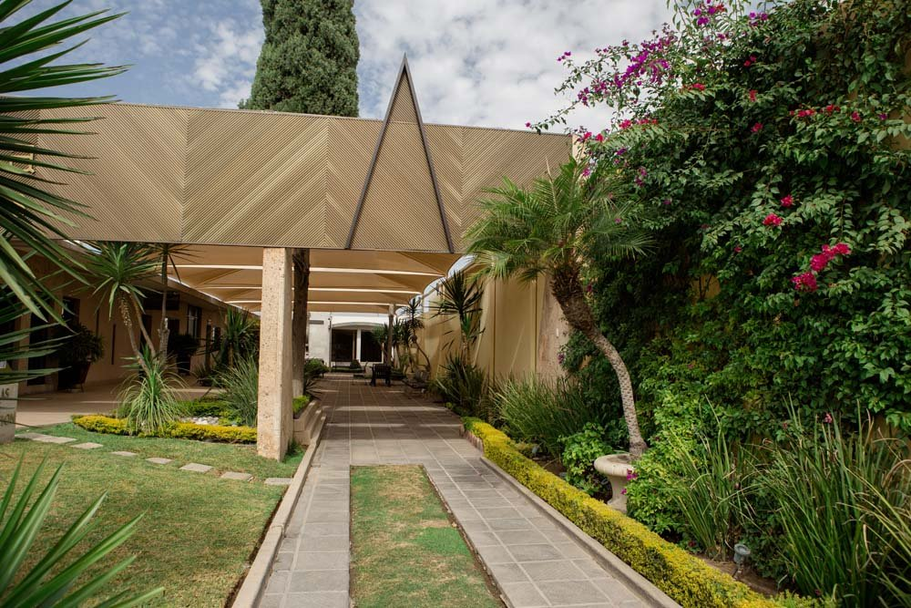

Martha
Mis papás llevaban años diciendo “luego lo vemos”. Fuimos a Serna, nos explicaron todo con mucha paciencia y lo dejamos pagando a meses. Mi mamá salió más tranquila que nosotros.

Te atendemos las 24 horas, los 365 díasAtención 24/7


 Una familia lagunera atendiendo a familias laguneras.
Una familia lagunera atendiendo a familias laguneras.
Cuatro generaciones de la familia Serna acompañando a La Laguna. Atendemos hoy mismo, o te ayudamos a dejar todo listo para que tu familia nunca tenga que decidir con prisa.
4.8/5 Promedio en Google Maps
Google Facebook
Mis papás llevaban años diciendo “luego lo vemos”. Fuimos a Serna, nos explicaron todo con mucha paciencia y lo dejamos pagando a meses. Mi mamá salió más tranquila que nosotros.
Mi abuelo falleció de madrugada y no sabíamos ni a quién llamar. Contestaron al segundo timbre y en menos de una hora ya estaban con nosotros. Gracias de corazón.

Desde que llegamos nos sentimos acompañados. La sala impecable, el café siempre listo y nadie nos apuró para nada. Cuidaron a mi abuelita como si fuera suya.

Tengo 74 años y no quería que mis hijos batallaran. Escogí todo yo, lo estoy pagando a 18 meses y el precio no me lo van a subir. Así sí.

Nos mandaron la información por WhatsApp y nos dejaron decidirlo con calma. Ni una sola llamada insistente. Al final contratamos el plan para los dos.

Mi papá falleció fuera y yo no tenía idea de los trámites. Ellos se encargaron de todo el traslado y me iban avisando cada paso. Eternamente agradecido.

Compramos un nicho para las cenizas de mi mamá. Es un espacio muy tranquilo y limpio. Vamos cada domingo después de misa.

La ceremonia guiada fue algo que no esperábamos. Mis hijos y yo pudimos decirle a mi esposa todo lo que traíamos guardado. Muy humano.

Mi abuelo, mi papá y ahora mi mamá. Siempre el mismo respeto y la misma calidez. En mi familia no se piensa en otra funeraria.

Desde 1935 la familia Serna atiende personalmente el negocio. Hoy va la cuarta generación, con los mismos valores del abuelo: empatía, calidez y atención personalizada.
Conoce nuestra historiaTe decimos qué incluye cada servicio y qué no, antes de que decidas. Sin letras chiquitas ni cargos sorpresa.
Ceremonias guiadas de despedida con tanatología, video homenajes y muros de recuerdos para que el duelo no se viva solo.
Con la previsión Serna el precio pactado hoy es el precio final, y lo pagas hasta en 36 meses sin intereses bancarios.

Todo empieza con una llamada al 871 717 8585. Te contesta una persona de nuestro equipo, no una grabadora, y te dice exactamente qué hacer.
Inhumación, cremación, velación en sala u oratorio: te explicamos cada opción con claridad para que elijas lo que tu familia quiere.
Gestoría, documentos, traslados locales, nacionales e internacionales. Tú no tienes que hacer filas ni llamadas.
Sala de velación, cafetería, carroza y personal uniformado. Cada detalle cuidado para que solo te ocupes de despedirte.
Ceremonias guiadas de despedida, video homenajes y muros de recuerdos para honrar su memoria.
Ataúd, sala de velación, carroza, oratorio y trámites incluidos.
Ver detalleCon el primer crematorio de la ciudad y el cuidado de siempre.
Ver detallePrecio congelado hoy, hasta 36 meses sin intereses.
Ver detalleUn lugar digno y cercano para visitar a quien amas.
Ver detalleNacionales e internacionales, con todos los trámites.
Ver detallePara empresas, sindicatos e instituciones de gobierno.
Ver detalleCada semana, familias de Torreón y Gómez Palacio nos confían a quien más quieren. Estas son algunas de sus historias.
“Mis papás llevaban años diciendo “luego lo vemos”. Fuimos a Serna, nos explicaron todo con mucha paciencia y lo dejamos pagando a meses. Mi mamá salió más tranquila que nosotros.”
Martha G.
Previsión · hace 2 días
Mis papás llevaban años diciendo “luego lo vemos”. Fuimos a Serna, nos explicaron todo con mucha paciencia y lo dejamos pagando a meses. Mi mamá salió más tranquila que nosotros.
“Mi abuelo falleció de madrugada y no sabíamos ni a quién llamar. Contestaron al segundo timbre y en menos de una hora ya estaban con nosotros. Gracias de corazón.”
Ricardo L.
Uso inmediato · hace 1 semana
Mi abuelo falleció de madrugada y no sabíamos ni a quién llamar. Contestaron al segundo timbre y en menos de una hora ya estaban con nosotros. Gracias de corazón.
“Desde que llegamos nos sentimos acompañados. La sala impecable, el café siempre listo y nadie nos apuró para nada. Cuidaron a mi abuelita como si fuera suya.”
Daniela y Raúl R.
Cremación · hace 3 semanas
Desde que llegamos nos sentimos acompañados. La sala impecable, el café siempre listo y nadie nos apuró para nada. Cuidaron a mi abuelita como si fuera suya.
“Tengo 74 años y no quería que mis hijos batallaran. Escogí todo yo, lo estoy pagando a 18 meses y el precio no me lo van a subir. Así sí.”
Don Arturo M.
Previsión · hace 1 mes
Tengo 74 años y no quería que mis hijos batallaran. Escogí todo yo, lo estoy pagando a 18 meses y el precio no me lo van a subir. Así sí.
“Nos mandaron la información por WhatsApp y nos dejaron decidirlo con calma. Ni una sola llamada insistente. Al final contratamos el plan para los dos.”
Familia Hernández
Previsión · hace 1 mes
Nos mandaron la información por WhatsApp y nos dejaron decidirlo con calma. Ni una sola llamada insistente. Al final contratamos el plan para los dos.
“Mi papá falleció fuera y yo no tenía idea de los trámites. Ellos se encargaron de todo el traslado y me iban avisando cada paso. Eternamente agradecido.”
Luis F.
Traslado · hace 2 meses
Mi papá falleció fuera y yo no tenía idea de los trámites. Ellos se encargaron de todo el traslado y me iban avisando cada paso. Eternamente agradecido.
“Compramos un nicho para las cenizas de mi mamá. Es un espacio muy tranquilo y limpio. Vamos cada domingo después de misa.”
Rosa Elena V.
Nichos · hace 2 meses
Compramos un nicho para las cenizas de mi mamá. Es un espacio muy tranquilo y limpio. Vamos cada domingo después de misa.
“La ceremonia guiada fue algo que no esperábamos. Mis hijos y yo pudimos decirle a mi esposa todo lo que traíamos guardado. Muy humano.”
Don Ernesto S.
Despedida guiada · hace 3 meses
La ceremonia guiada fue algo que no esperábamos. Mis hijos y yo pudimos decirle a mi esposa todo lo que traíamos guardado. Muy humano.
“Mi abuelo, mi papá y ahora mi mamá. Siempre el mismo respeto y la misma calidez. En mi familia no se piensa en otra funeraria.”
Jorge A.
Uso inmediato · hace 3 meses
Mi abuelo, mi papá y ahora mi mamá. Siempre el mismo respeto y la misma calidez. En mi familia no se piensa en otra funeraria.
4.8/5 de calificación promedio de familias en Google Maps
Tres sucursales con instalaciones propias en Torreón y Gómez Palacio, y una sola familia detrás de cada servicio.
Av. Juárez 2133 Ote., Col. Centro
Torreón, Coah.
Av. Matamoros 100 Pte., Centro
Torreón, Coah.
Av. Hidalgo 573, Centro
Gómez Palacio, Dgo.

Dentro de nuestras instalaciones,
cuidados todos los días
Gilberto Serna López fundó la empresa en 1935 fabricando sus propios ataúdes junto a su esposa y nueve hijos. Hoy la cuarta generación sigue al frente con los mismos valores.

Sabemos que es un tema difícil. Aquí respondemos lo que más nos preguntan.
Llámanos al 871 717 8585 a cualquier hora. Te diremos paso a paso qué hacer, pasamos por tu ser querido y nos encargamos de los trámites.
Es dejar contratado hoy el servicio funerario que quieres, para que tu familia no tenga que decidir ni pagar en el momento de la pérdida. El precio pactado hoy es el precio final y lo puedes pagar hasta en 36 meses sin intereses bancarios.
Porque cuando no está planeado, normalmente se decide con prisa, en duelo y con costos más altos. Contratar hoy te da certeza y protege a tu familia de sobrecostos.
Ataúd, sala de velación, cafetería, carroza, personal uniformado, arreglo estético, gestoría, traslados locales, oratorio para servicios religiosos y tramitación de documentos. No incluye cementerio ni esquela.
Renta de ataúd, cremación, tramitación de documentos, traslados locales, personal uniformado, sala de velación, arreglo estético, oratorio, gestoría y cafetería.
Sí. Hacemos traslados nacionales e internacionales y te ayudamos con la documentación que pide cada estado.
Sí. Tenemos convenios con empresas privadas, sindicatos e instituciones de gobierno. Déjanos tus datos y un asesor te contacta.

Responde 5 preguntas y un asesor de la familia Serna te contacta por WhatsApp con opciones para ti.